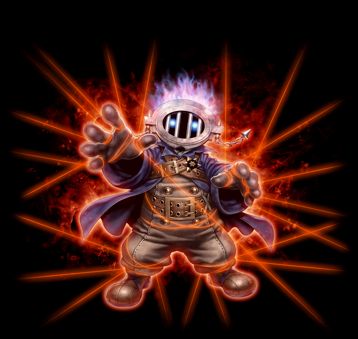

2018/10～2020 ネクロマンサー 覚醒スキル一覧
2018/10/03 ネクロスキル改変後のデータ。
アイテム面では、「鉄血の意志」が装備できなくなりました。
2020/02/19 状態異常に伴うスキル改変前のデータ。
改変後は、2020/02/19バランスパッチ反映版を参考にしてください。
ストレンジコンジュラー
ウィキッドサイコロジスト
デモニックチューナー
ストレンジコンジュラー
| ストレンジコンジュラー | |||||||
|---|---|---|---|---|---|---|---|
| [専用パッシブ] ライフスティール | |||||||
| スキル説明 |
物理攻撃をするたびに少しずつ生命力を吸収する。 |
||||||
| スキル効果 |
物理攻撃命中時、ダメージに応じたHP吸収 3％ |
||||||
| [専用覚醒スキル] パヒュームオブデス | ||||||||
|---|---|---|---|---|---|---|---|---|
| スキル難易度 | 5 | |||||||
| 必要スキル | 死の香り [50] |
|||||||
| スキル説明 | 薄気味悪い死の香りで、敵の異常系抵抗力・低下系抵抗力・呪い系抵抗力を一定数値以上、無効にさせてしまう。従来より闇属性ダメージが増加し、闇属性ダメージを吸収できる。 | |||||||
| レベル | 0 | 1 | 2 | 3 | 4 | 5 | ... | 50 |
| 消費CP | 445 | 453 | 461 | 469 | 477 | 485 | ... | 545 |
| 獲得CP | 0 | |||||||
| ◆闇ダメージ | 385 | 390 | 395 | 400 | 405 | 410 | ... | 635 |
| 持続時間(秒) | 530 | 540 | 550 | 560 | 570 | 580 | ... | 630 |
| 異常/低下/呪い抵抗低下(％) | -54% | -55% | -56% | -57% | -58% | -59% | ... | -75% |
| 備考 | 異常・低下抵抗は最大75％低下(SLv71)、呪い抵抗は60%低下。 闇ダメージのHP吸収が可能 |
|||||||
| 備考 | 物理攻撃の成功時、敵の異常系・低下系・呪い系の抵抗力を[n]％下げる。 物理攻撃成功時、敵に闇ダメージ [n]を与える。 |
|||||||
| 備考 | 知識・属性強化・弱化がスキル使用時にリアルタイムで適用されます。恐怖の幻影使用時にも適用されます。 | |||||||
| ダークネストリック | ||||||||
|---|---|---|---|---|---|---|---|---|
| スキル難易度 | 5 | |||||||
| 必要スキル | ダークネスイリュージョン [50] |
|||||||
| スキル説明 | まやかしの闇で自分と周囲にいる敵の「知識と力」、「知恵と敏捷性」をそれぞれ入れ替える。入れ替え後、力が知識より高ければ武器攻撃力が増加し、知識が力より高ければスキルレベルが増加する。 | |||||||
| レベル | 0 | 1 | 2 | 3 | 4 | 5 | ... | 50 |
| 消費CP | 550 | 560 | 570 | 580 | 590 | 600 | ... | 1050 |
| 獲得CP | 100 | 102 | 104 | 106 | 108 | 110 | ... | 200 |
| 持続時間(秒) | 210 | 213 | 216 | 219 | 222 | 225 | ... | 360 |
| 攻撃力上昇(％) | 100% | |||||||
| 死の香りスキルダメージ増加値 | 知識のほうが高い場合、50%死の香りのダメージが増加 | |||||||
| 範囲(m) | 2 | |||||||
 |
ネームレスアタック | |||||||
|---|---|---|---|---|---|---|---|---|
| スキル難易度 | 1 | |||||||
| 必要スキル | フルアタック [50] |
|||||||
| スキル説明 | 装備している様々な武器で範囲内の敵を攻撃したり、または降霊したモンスターに攻撃命令を下す。 | |||||||
| レベル | 0 | 1 | 2 | 3 | 4 | 5 | ... | 50 |
| 消費CP | 0 | |||||||
| 獲得CP | 31 | 31.6 | 32.2 | 32.8 | 33.4 | 34 | ... | 61 |
| ◆物理ダメージ | 100% | 102% | 104% | 106% | 108% | 110% | ... | 200% |
| 命中率補正値(％) | 5% | 5.1% | 5.2% | 5.3% | 5.4% | 5.5% | ... | 10% |
| 攻撃範囲(m) | 1.5 | |||||||
| 攻撃回数 | 6回 | |||||||
ウィキッドサイコロジスト
| ウィキッドサイコロジスト | |||||||
|---|---|---|---|---|---|---|---|
|  | |||||||
| [専用パッシブ] 偽りの身体 | |||||||
| スキル説明 |
人形の中に隠していた呪いを一気に炸裂させる。敵に呪いをかけて、呪いを保有した敵に恐ろしい幻影を見せて闇属性ダメージを追加で与える。 |
||||||
| スキル効果 |
- [怒髪衝天]、[無慈悲な拷問]、[地獄針のむしろ]状態の敵攻撃時、100%の確率で該当スキルのダメージを受ける。 |
||||||
| [専用覚醒スキル] 怒髪衝天 | ||||||||
|---|---|---|---|---|---|---|---|---|
| スキル難易度 | 5 | |||||||
| 必要スキル | 逆鱗 [50] |
|||||||
| スキル説明 | 悪意に満ちた悪口で戦闘本能を刺激させる。ただし、敵が限られた小時間内に対象を殺せなければ、極端なダメージを与えることができる。 | |||||||
| レベル | 0 | 1 | 2 | 3 | 4 | 5 | ... | 50 |
| 消費CP | 210 | 213 | 216 | 219 | 222 | 225 | ... | 360 |
| 獲得CP | 50 | 51 | 52 | 53 | 54 | 55 | ... | 100 |
| ◆闇ダメージ | 415 | 423 | 430 | 438 | 445 | 453 | ... | 783 |
| 限界時間(秒)(Min 4) | 4.49 | 4.48 | 4.47 | 4.46 | 4.45 | 4.44 | ... | |
| 攻撃回数 | 4 | |||||||
| キャスティング速度(秒) | 2 | |||||||
| 射程距離(m) | 4 | |||||||
| 爆発範囲(m) | 1.8 | |||||||
| 備考 | ターゲットは[n]秒が過ぎる前に対象を殺せないと[n]の闇ダメージを受ける | |||||||
| 備考 | 恐怖の幻影使用時に一定確率で発動 | |||||||
| 無慈悲な拷問 | ||||||||
|---|---|---|---|---|---|---|---|---|
| スキル難易度 | 3 | |||||||
| 必要スキル | ミラーカーズ [50] |
|||||||
| スキル説明 | 敵が攻撃を試みる度に、攻撃者も強大なダメージを受ける呪いをかける。 | |||||||
| レベル | 0 | 1 | 2 | 3 | 4 | 5 | ... | 50 |
| 消費CP | 175 | 178 | 181 | 184 | 187 | 190 | ... | 325 |
| 獲得CP | 0 | |||||||
| ◆闇ダメージ | 288 | 293 | 298 | 303 | 308 | 313 | ... | 533 |
| 攻撃回数 | 2 | |||||||
| 持続時間(秒) | 220 | 224 | 228 | 232 | 236 | 240 | ... | 420 |
| 射程距離(m) | 4 | |||||||
| 爆発範囲(m) | 1.8 | |||||||
| 備考 | 恐怖の幻影使用時に一定確率で発動 | |||||||
| 地獄針のむしろ | ||||||||
|---|---|---|---|---|---|---|---|---|
| スキル難易度 | 3 | |||||||
| 必要スキル | 針のむしろ [50] |
|||||||
| スキル説明 | 敵の余裕を奪って攻撃のミスを誘い、自責の念を大きく増幅させ闇ダメージを与えながら命中率を減少させる。そのかわり自責の念に落ちた敵は攻撃速度が増加する。 | |||||||
| レベル | 0 | 1 | 2 | 3 | 4 | 5 | ... | 50 |
| 消費CP | 175 | 178 | 181 | 184 | 187 | 190 | ... | 325 |
| 獲得CP | 0 | |||||||
| ◆闇ダメージ | 288 | 293 | 298 | 303 | 308 | 313 | ... | 533 |
| 攻撃回数 | 2 | |||||||
| 持続時間(秒) | 220 | 224 | 228 | 232 | 236 | 240 | ... | 420 |
| 射程距離(m) | 4 | |||||||
| 爆発範囲(m) | 1.8 | |||||||
| 備考 | 恐怖の幻影使用時に一定確率で発動 | |||||||
デモニックチューナー
| デモニックチューナー | |||||||
|---|---|---|---|---|---|---|---|
| [専用パッシブ] 邪悪な手札 | |||||||
| スキル説明 |
敵を倒した際に、HPを一定値回復する。 |
||||||
| スキル効果 |
ターゲット死亡時、HPの10%を回復する。 |
||||||
 |
[専用覚醒スキル] デビルミラージュ | |||||||
|---|---|---|---|---|---|---|---|---|
| スキル難易度 | 1 | |||||||
| 必要スキル | デビルイリュージョン [50] |
|||||||
| スキル説明 | 望む位置に、自分が悪魔に変化したと思わせるような幻影を作る。敵は、この幻影を先に攻撃するので時間を稼ぐことができる。従来より持続時間が短縮され、幻影が消えると周辺の敵にダメージを与える。 | |||||||
| レベル | 0 | 1 | 2 | 3 | 4 | 5 | ... | 50 |
| 消費CP | 55 | 56 | 57 | 58 | 59 | 60 | ... | 105 |
| 獲得CP | 0 | |||||||
| 射程距離(m) | 5 | 5.05 | 5.1 | 5.15 | 5.2 | 5.25 | ... | 7.5 |
| 持続闇ダメージ | 520 | 530 | 540 | 550 | 560 | 570 | ... | 1020 |
| 幻影HP(％) | 280% | 284% | 288% | 292% | 296% | 300% | ... | 480% |
| 持続時間(秒) | 5 | |||||||
| 各ダメージの攻撃範囲(m) | 3 | |||||||
| ダメージの間隔 | 1秒 | |||||||
| 爆発闇ダメージ | 900 | |||||||
| 移動速度減少 | 75% | |||||||
| 移動速度減少確率 | 100% | |||||||
| 減少持続時間 | 5 | |||||||
| クールタイム | 3 | |||||||
 |
死の宣告 | |||||||
|---|---|---|---|---|---|---|---|---|
| スキル難易度 | 4 | |||||||
| 必要スキル | 死の予言 [50]
|
|||||||
| スキル説明 |
範囲内の敵に死の呪いをかけて、敵の体力を現在の体力から決まった割合の体力に、応急処置的に変えてしまう。
従来より消費CPが減少。 |
|||||||
| レベル | 0 | 1 | 2 | 3 | 4 | 5 | ... | 50 |
| 消費CP | 150 | 155 | 160 | 165 | 170 | 175 | ... | 400 |
| 獲得CP | 0 | |||||||
| 応急処置率(％) | 40% | 40.6% | 41.2% | 41.8% | 42.4% | 43% | ... | 50% |
| ◆物理ダメージ | 200% | |||||||
| 射程距離(m) | 5 | |||||||
| 発動確率 | 95% | |||||||
| 応急処置持続時間(秒) | 5 | |||||||
| スキルの範囲(m) | 2.5 | |||||||
| 備考 | 応急処置は最大50%(SLv67) | |||||||
| ◆闇ダメージ | 565 | 575 | 585 | 595 | 605 | 615 | ... | 1065 |
| 備考 | 応急処置にしたHPが時間経過後に全て残っている場合、上記の闇ダメージが与えられる。 | |||||||
| 闇よりの使徒 | ||||||||
|---|---|---|---|---|---|---|---|---|
| スキル難易度 | 3 | |||||||
| 必要スキル | 陰謀の影 [50]
|
|||||||
| スキル説明 | 邪悪な陰謀を企むことで自分を苦しめ、自身にダメージを与える。持続時間の経過により、アイテムやスキルの効果が消える時、効果が持続していた時間分、従来より大きいダメージを敵に与える。 | |||||||
| レベル | 0 | 1 | 2 | 3 | 4 | 5 | ... | 50 |
| 消費CP | 105 | 106.5 | 108 | 109.5 | 111 | 112.5 | ... | 180 |
| 獲得CP | 100 | 102 | 104 | 106 | 108 | 110 | ... | 200 |
| ◆闇ダメージ | 300 | 330 | 360 | 390 | 420 | 450 | ... | 1800 |
| 持続時間(秒)(Max 4) | 3 | 3.03 | 3.06 | 3.09 | 3.12 | 3.15 | ... | 4.5 |
| 同時攻撃回数(Max 12) | 9 | 9 | 9 | 9 | 9 | 9 | ... | 12 |
| 1秒あたりの使用者のダメージ | 25 | 25.5 | 26 | 26.5 | 27 | 27.5 | ... | 50 |
| 射程距離(m) | 4 | |||||||